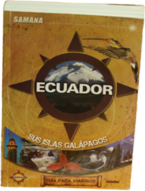

English
Español
Inicio
La guía
¿Quiénes somos?
Galería de fotos
Ecuador
Servicio Turístico
Contáctenos
Samana contiene toda la información que usted como viajero necesita para su recorrido por el Ecuador:
• Fotografías a todo color de las regiones del país.
• Datos actualzados sobre alojamiento, restaurantes, vida nocturna, actividades, actividades culturales, con todo los teléfonos que necisita.
• Recomendaciones de recorridos para observar32la divirsidad de flora y fauna; los mejores lugares para hacer deporte de aventura o los atractivos turísticos de cada provincia.
• Leyendas, información interesante, datos y referen- cias culturales, servicios y mucho más.
Galápagos, El paraíso esta en el cielo en Ecuador el
pic.twitter.com
